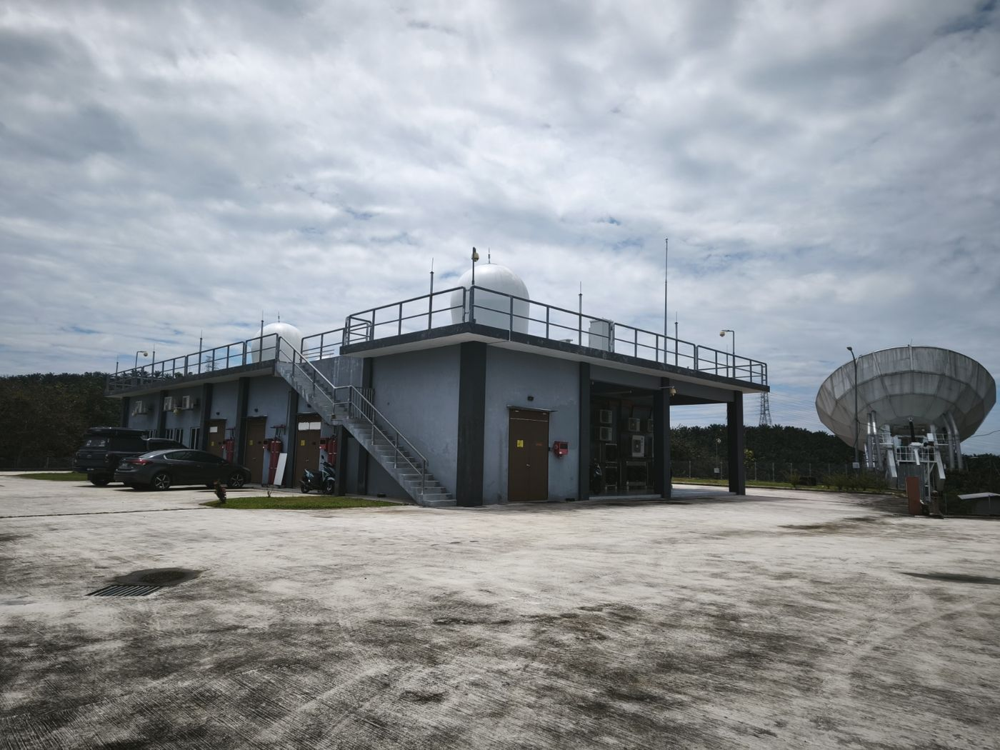
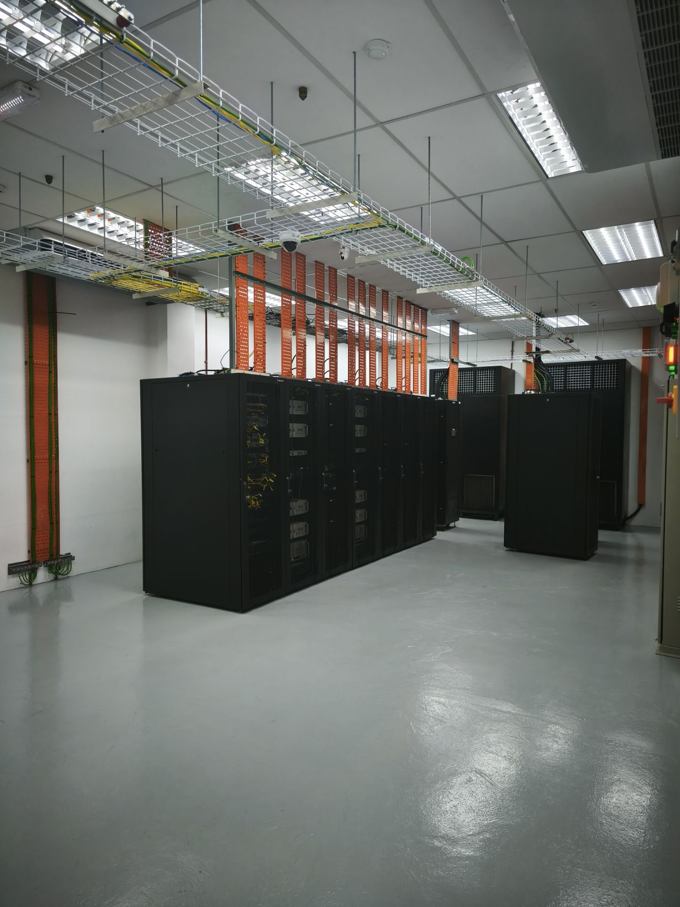
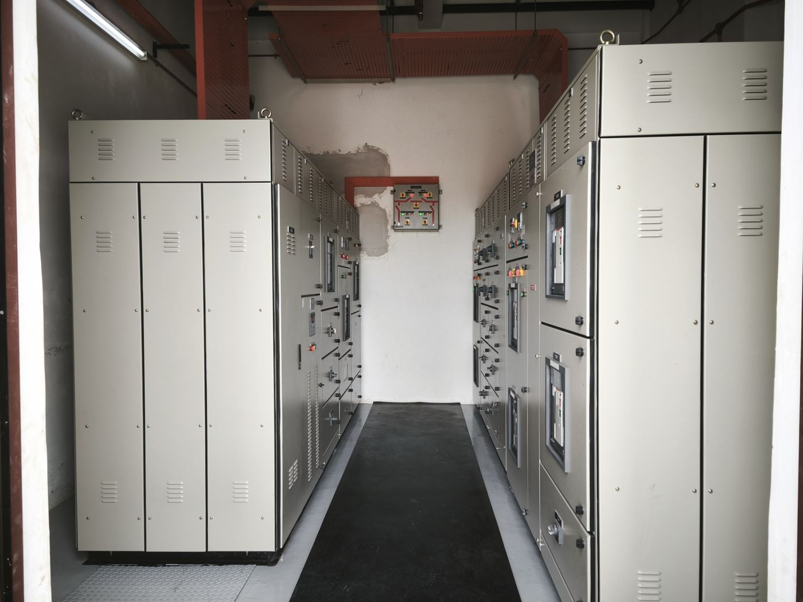
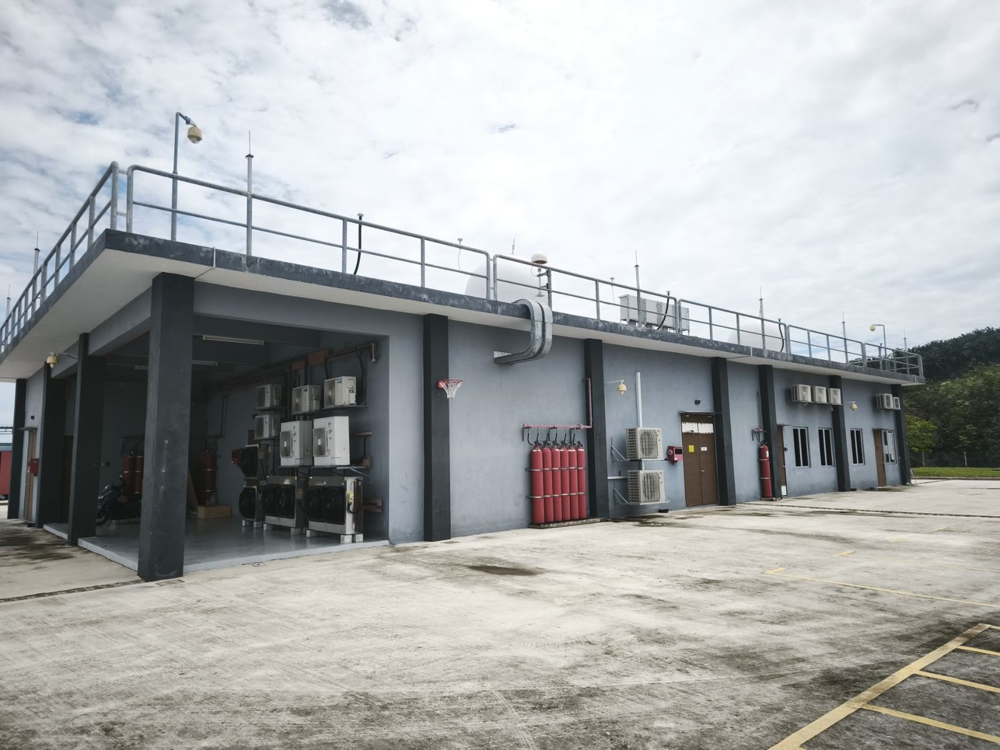
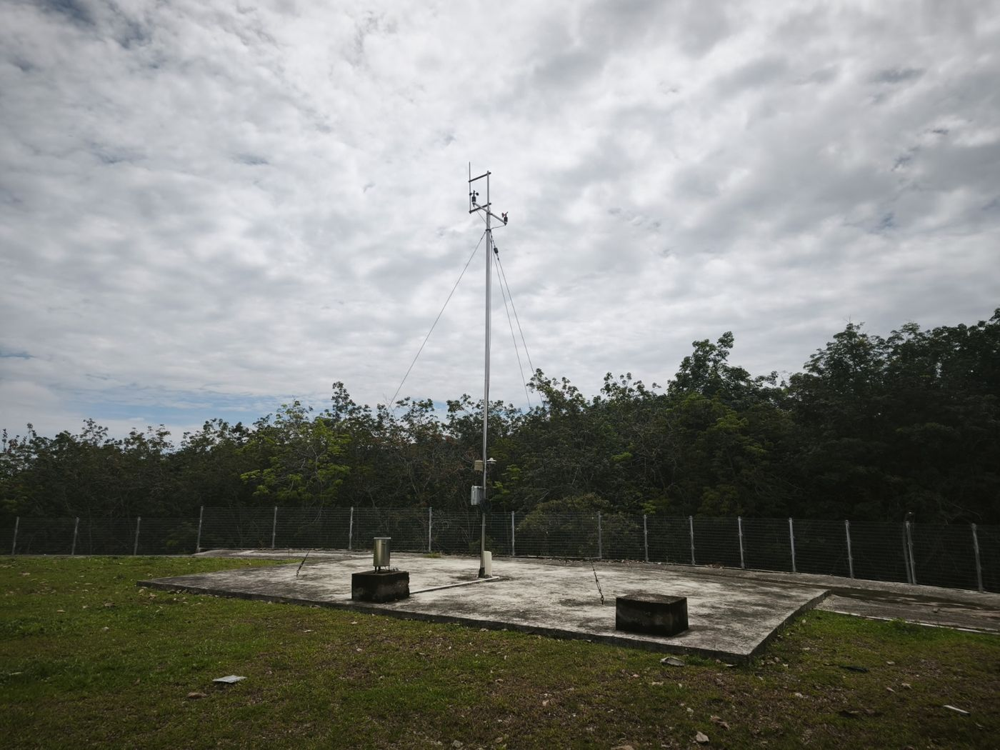

Strategic alliance under APStar Hong Kong
SGS operates as a strategic alliance partner under APT Satellite Holdings, connecting Malaysian ground infrastructure to an established regional satellite fleet.
Satcom Gateway Services Sdn Bhd (SGS) is a Malaysia-based satellite communications and teleport services provider supporting the evolving needs of enterprise, telecommunications, maritime and satellite network operators.
SGS operates and manages satellite ground infrastructure designed to support gateway, uplink and connectivity requirements. Our capabilities span teleport operations, satellite broadband, enterprise connectivity, satellite mobility, satellite backhaul, satellite capacity leasing, data centre and colocation services, and related satellite ground-segment support.
Our facilities provide the infrastructure required to host and operate critical satellite gateway equipment, including antenna systems, secure equipment racks, redundant power and supporting environmental systems. SGS also provides technical and operational support covering installation, integration, commissioning, maintenance and ongoing site operations, enabling our partners to deploy and manage satellite networks efficiently.

SGS operates as a strategic alliance partner under APT Satellite Holdings, connecting Malaysian ground infrastructure to an established regional satellite fleet.
A satellite ground station in Rantau, Negeri Sembilan, open to multiple operators and carriers on equal commercial terms.
Tier III-class data centre space, IP gateway and network services co-located with the antenna farm — no intermediate haul between dish and rack.
Hosting across APStar-9, APStar-5C, APStar-6D and the SPACESAIL LEO constellation.
Satcom Gateway Services Sdn Bhd operates within Malaysia's communications and multimedia regulatory framework and holds relevant licences and registrations issued by the Malaysian Communications and Multimedia Commission (MCMC).
Individual Licence. Authorises SGS to own or provide network facilities.
Individual Licence. Authorises SGS to provide network services.
Class registration for the provision of applications services.

Satellite networks require more than bandwidth. They require dependable ground infrastructure, operational expertise and the ability to respond to the technical demands of mission-critical communications.
SGS combines teleport infrastructure, satellite ground systems and technical capabilities to provide an integrated environment for satellite network deployment and operations. Our infrastructure supports multiple satellite frequency bands, including C-band, Ku-band and Ka-band, while our experience extends across both traditional satellite networks and emerging Low Earth Orbit (LEO) technologies.
From gateway infrastructure and equipment hosting to connectivity and ongoing technical support, SGS works closely with satellite operators, technology partners and enterprise customers to deliver solutions suited to their operational requirements.
SGS is a strategic alliance partner under APStar Hong Kong — APT Satellite Holdings, an established regional satellite operator serving the Asia-Pacific. The relationship gives customers a direct route from a Malaysian gateway onto the APStar geostationary fleet, and from there to markets across the region.
It also underpins the SGS LEO programme with SPACESAIL, allowing hybrid GEO–LEO services to be designed, hosted and supported from the same site.
SPACESAIL research on key LEO technologies; company founded in 2018.
APStar-5C launched in the first half of 2018 at 138°E; APStar-6D follows in 2019 at 134°E with a Kuala Lumpur gateway beam.
Test satellite batches launched; NDRC project approval, two ITU filings and inclusion in Shanghai's commercial space plan (2022–2035).
90 commercial satellites on orbit, moving toward a 648-satellite target constellation with direct-to-cell capability planned.
Hybrid GEO–LEO connectivity, low-cost LEO IoT and managed satcom bandwidth packages added to the SGS catalogue.
Strategically located in Malaysia, SGS provides a platform for satellite and telecommunications partners seeking to establish or expand their network presence in the region.
Experience supporting operators bringing new gateway infrastructure into service.
Ground systems for High Throughput Satellite payloads and spot-beam architectures.
Tracking antenna and gateway support for low-earth-orbit constellations.
Connectivity projects for vessels and fleets operating across regional waters.
As the satellite communications industry continues to evolve, SGS remains focused on developing the infrastructure, technical capabilities and partnerships needed to support the next generation of connected networks.
The SGS ground station (KL2) sits in the southern part of the Kuala Lumpur region — 68 km and about 53 minutes' drive from KLIA, 80 km from the metropolitan core. Antenna farm, data hall, power plant and operations are on one secured site.
Antenna farm supporting geostationary and LEO tracking operations.
Telekom Malaysia and Fiberail on site; 65 km dark fibre to KL1 in full redundancy.
Utility feed, standby generator, battery plant and main switchboard rooms.
Secure racks, environmental control and continuous monitoring.








Whether you need gateway hosting, capacity or colocation, our team can scope it against the site's real capability.